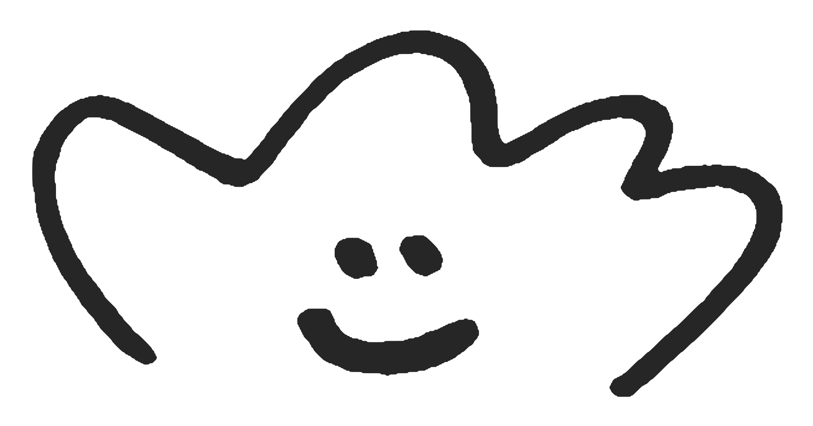

Mu is a product designer with 8 years in tech 

 , based in Silicon Valley, focused on building products with user-focused craft, systems thinking, and business impact.
, based in Silicon Valley, focused on building products with user-focused craft, systems thinking, and business impact.
Meta Business Suite, WhatsApp Manager
Used by millions of messaging businesses, third-party partners, and developers.

Side project, apps and animation
Apps and animations built for fun and everyday life.